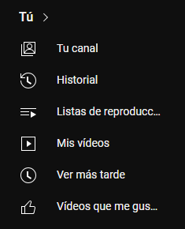

1.- Análisis de datos: Python se usa para el análisis y procesamiento de grandes volúmenes de datos, ayudando a YouTube a comprender patrones de visualización y preferencias de los usuarios.
2.- Machine Learning: Muchos de los algoritmos de recomendación y análisis de contenido se desarrollan utilizando bibliotecas de Python, como TensorFlow y PyTorch, para mejorar la personalización y la detección de contenido.
3.- Backend y servidores: Python puede formar parte del stack de tecnologías en el backend para manejar solicitudes y gestionar servicios.
4.- Automatización: Python se utiliza para automatizar tareas administrativas y de mantenimiento en los servidores, así como en la gestión de contenido.
5.- Herramientas de desarrollo: Los ingenieros de YouTube pueden usar Python para construir herramientas internas que faciliten el desarrollo y la implementación de nuevas funciones.
